CAMPro 資料讀取與匯出使用手冊
1. ODB++ 匯入與匯出
2. 讀取 Gerber 檔案
3. 讀取 Excellon2 檔案
4. 讀取 DXF 檔案
5. 匯出 Gerber274X、Excellon2 或 DXF 檔案
1-1 ODB++ 匯入
匯入 ODB++ 有兩種方式：
1-1-1 一般匯入
- 在 camPro 主畫面點開 "File"，然後點選 "Import ODB++"。
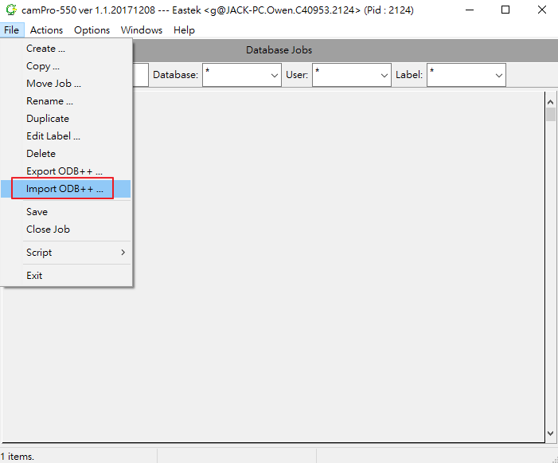
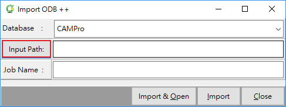
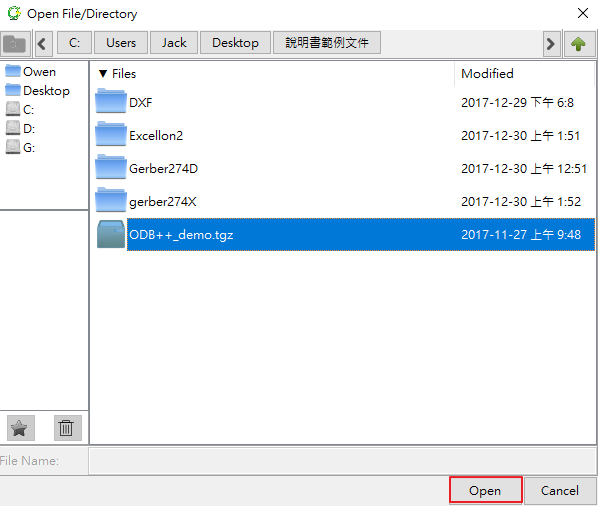
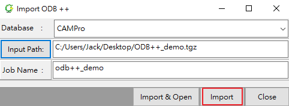
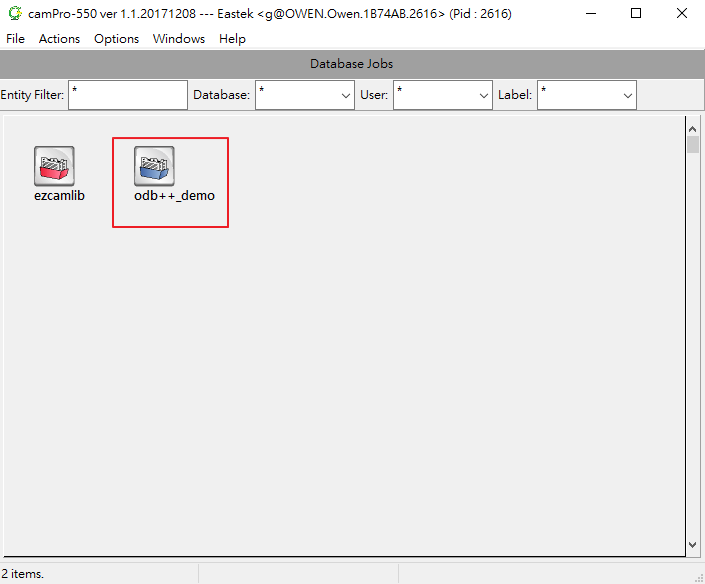
1-1-2 拖曳匯入
- 直接將 ODB++ 檔案 (通常副檔名為 .tgz) 拖曳到 camPro 主畫面。(本說明以 ODB++_demo.tgz 為例)
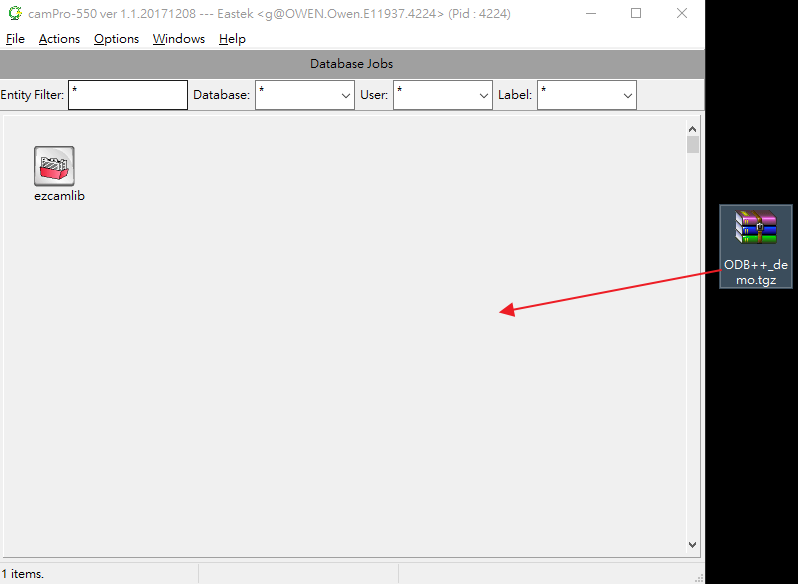
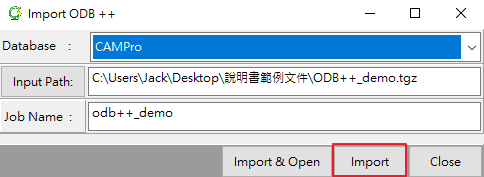
1-2 ODB++ 匯出
-
本章節將利用實際範例來說明如何匯出 ODB++。
-
點選您要匯出的料號。
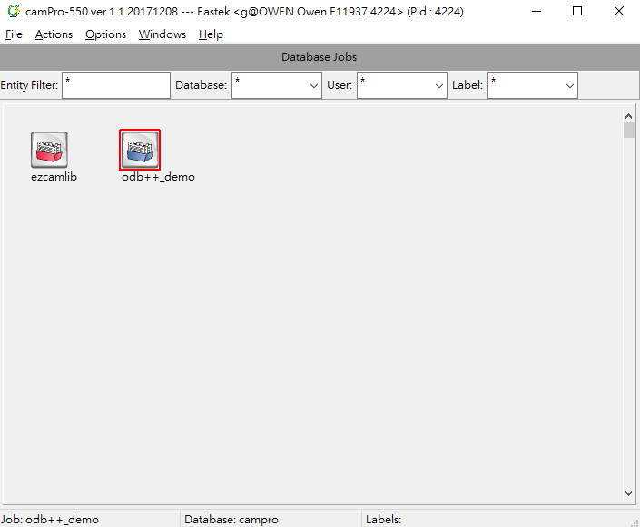
- 點開 "File"，選取 "Export ODB++"。
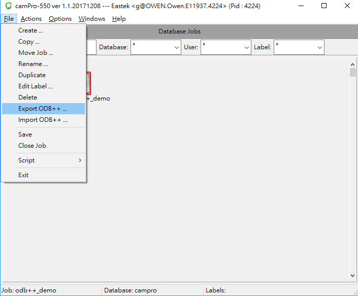
1-2-1 設定輸出規格
- Job：即將匯出的料號。
- Path：匯出後的儲存的路徑，可自行選擇，說明以 C:/CAMPro 為例。
- ODB++version：選擇匯出版本，camPro 可支援版本 6 或 7 ，說明以版本 6 為例。
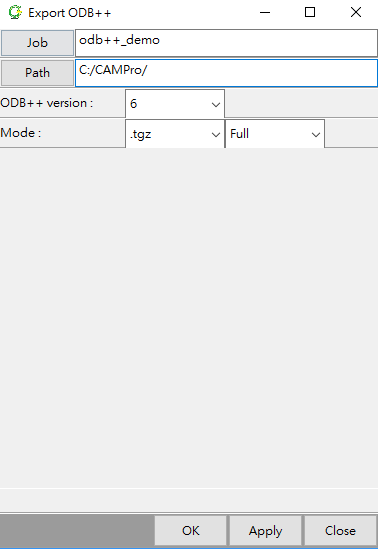
Mode 分為兩種：
1-2-2 全部匯出
- ODB++Version：可自行選擇版本 6 或 7 ，本說明以版本 6 為例。
- Mode：匯出副檔名系統自動預設值 ".tgz"，若要匯出全部檔案請選擇 "Full"。
- 設定完成後點選 "Apply"。
- 視窗下方出現綠底 Job export complete 通知後，即可至您指定的路徑找到匯出的 ODB++ 檔案!
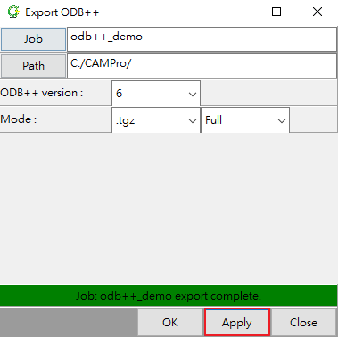
1-2-3 部分匯出
- 於 Mode 選取 "Partial" 可以從該料號中選擇部分資料進行匯出。
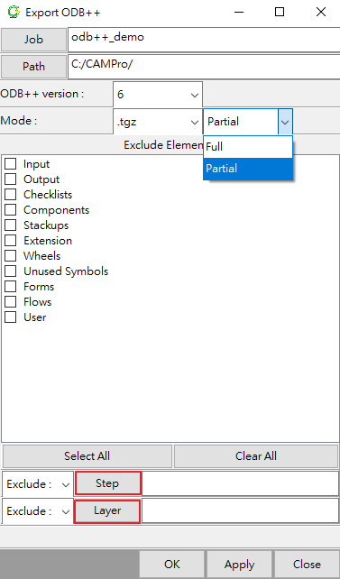
- 點開 "Step"，選擇需要匯出的 Step 然後點選 "OK"，說明以匯出 org 為例。
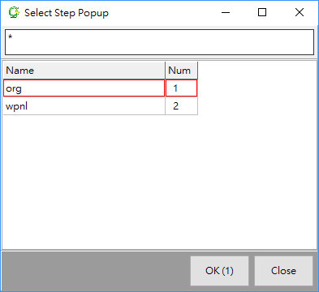
- 點開 "Layer"，選擇需要匯出的 Step 然後點選 "OK"，說明以匯出 stupy 為例。
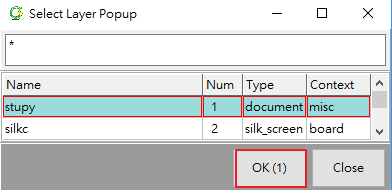
- 設定完成後點選 "Apply"。
- 視窗下方出現綠底 Job export complete 通知後，即可至您指定的路徑找到匯出的 ODB++ 檔案！
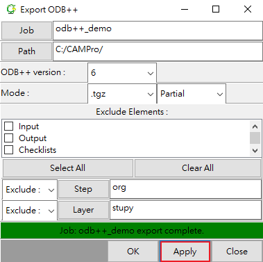
2-1 讀取 Gerber274X 一般程序
- 本章節將利用實際範例來說明讀取 Gerber274X 的一般程序。
2-1-1 創建 Entity
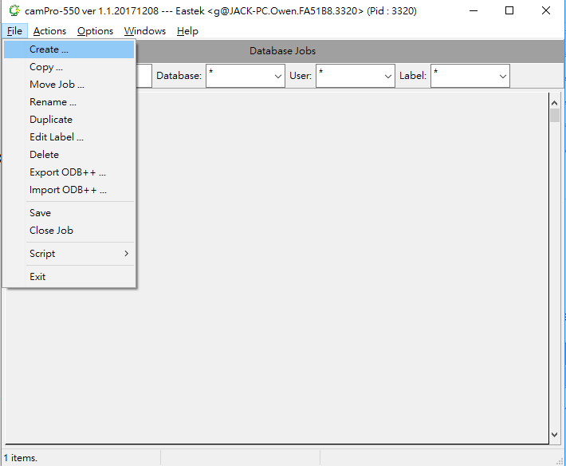
- Entity name：輸入 Entity 名稱(通常為料號)。
- Database：選取 Entity 存放的位置。
- 設定完後請點選 "OK"。
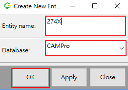
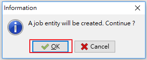
- 完成後 Entity 會出現在 camPro 主畫面上。
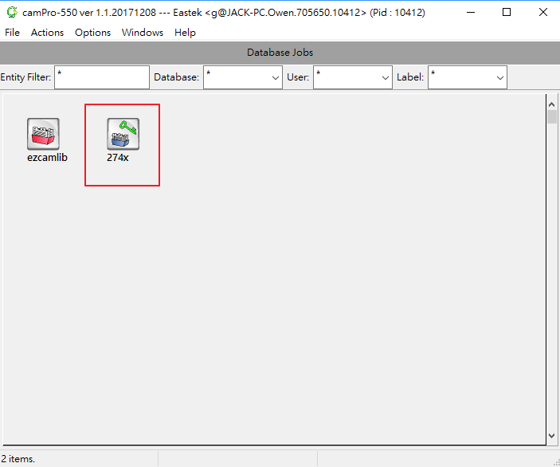
- 先點選您要匯入 Gerber274X 的 Entity，進入 Input package 畫面後點選 "Input"。
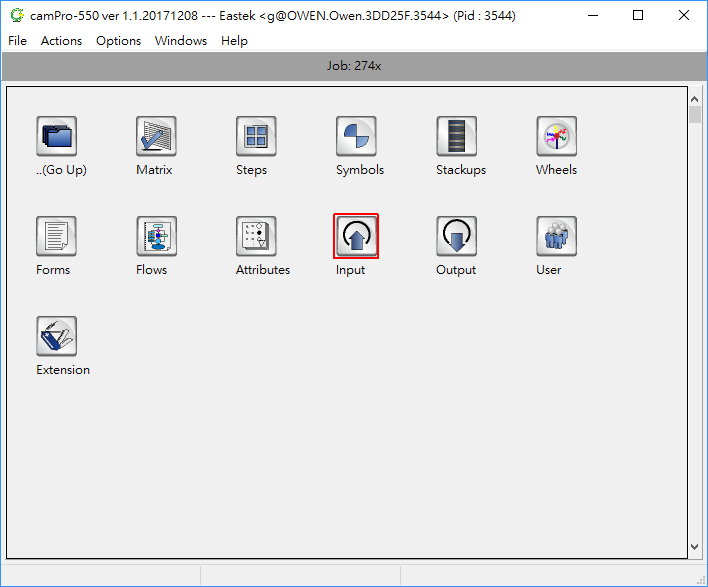
讀取 Gerber274X 有兩種方式：
2-1-2 一般讀取
- 點選 "Path"，然後選擇您要讀取的 Gerber274X 檔案，之後點選 "Open"。
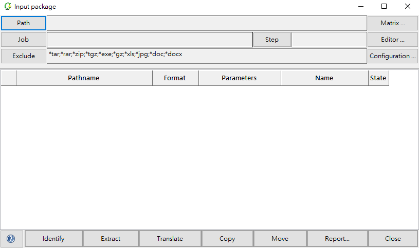
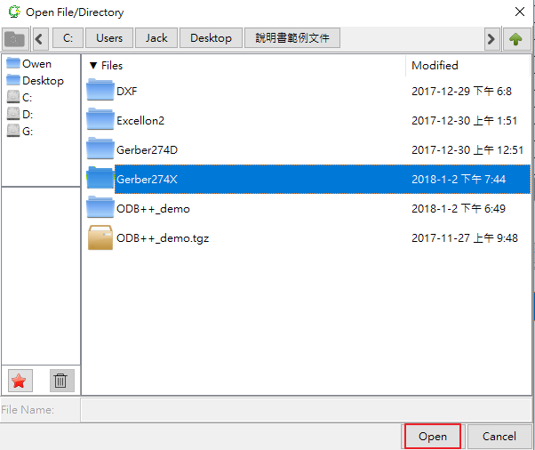
2-1-3 拖曳讀取
- 將 Gerber274X 資料夾直接拖曳到 camPro 視窗內。
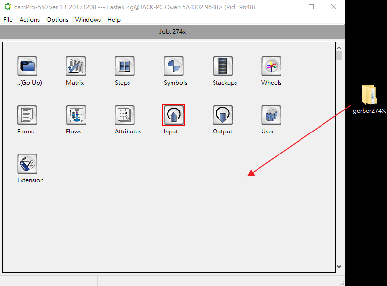
2-1-4 分析與處理 Gerber274X
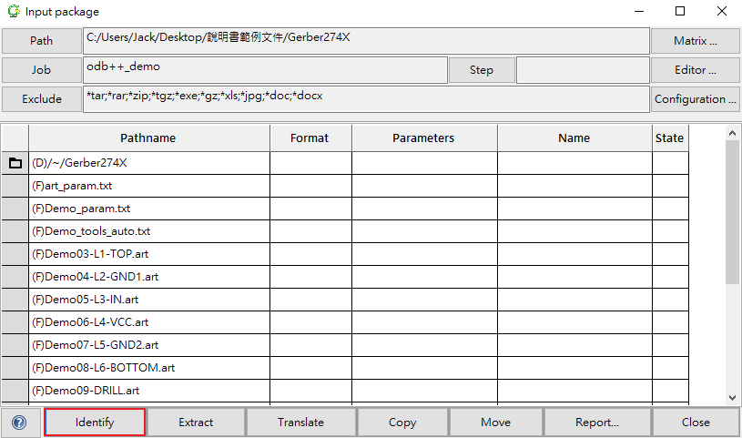
- 分析完成檔案類型會顯示在視窗裡，並呈現可勾選狀態。
- 請輸入 Step 名稱在欄位裡，範例名稱以 org 為例。
- 請勾選要讀取的 Gerber274X 檔案後點選 "Translate"。
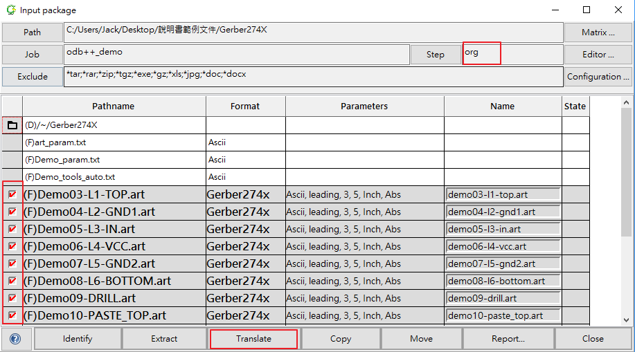
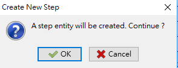
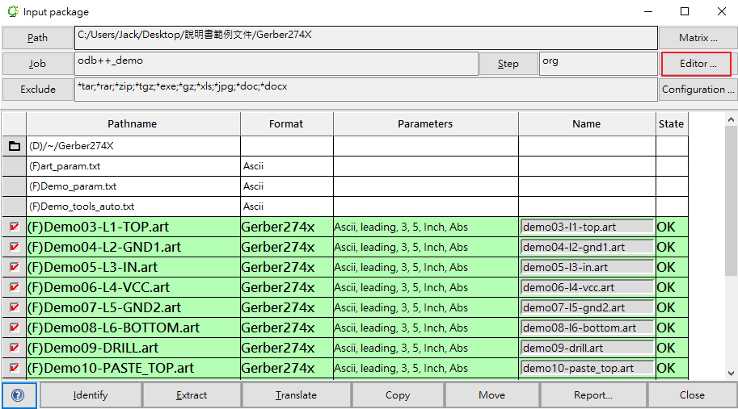
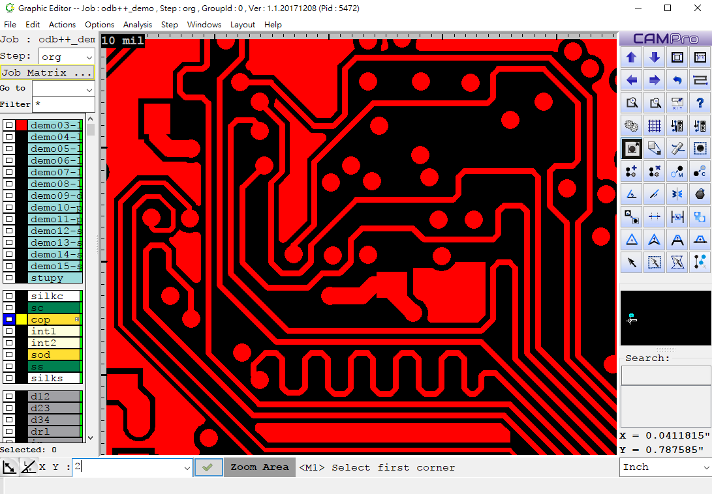
2-2 讀取 Gerber274X 時發生異常時如何處理
- 如果您發現您所讀取的 Gerber 圖形顯示不符合預期，本章節提供您一些解決方案。
2-2-1 如何修正 Gerber274x 參數
- 如果遇到 Gerber 比例不正確時，請先勾選需要修正的 Gerber274x，然後再點右鍵，點選 "Parameter" 以修改參數。
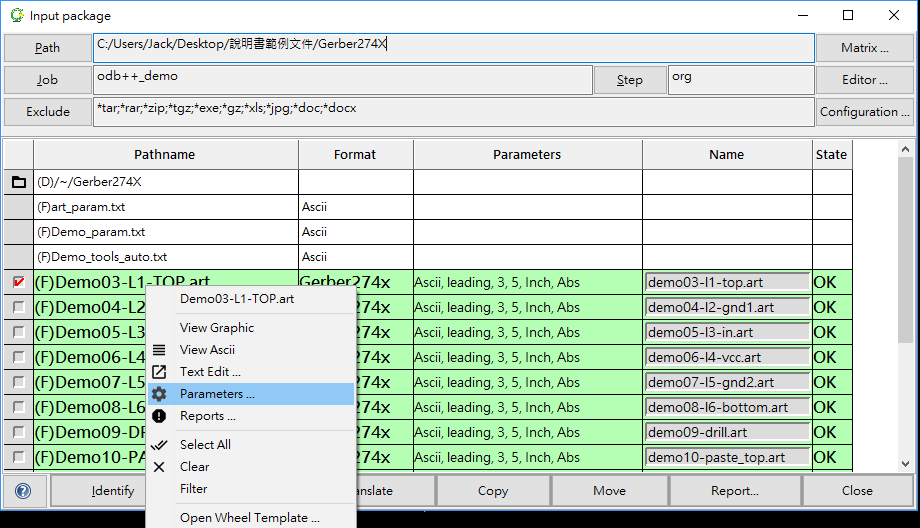
- 依照您的需求修改參數設定。
- 更改 Number format。
- File Filter 提供快速讀取並帶入其它類似檔案的功能。
- 請於 Other File 選取 "Yes"。
- Format 選取 "Same"。
- Directory 選取 "Same"。
- 最後點選 "OK"。
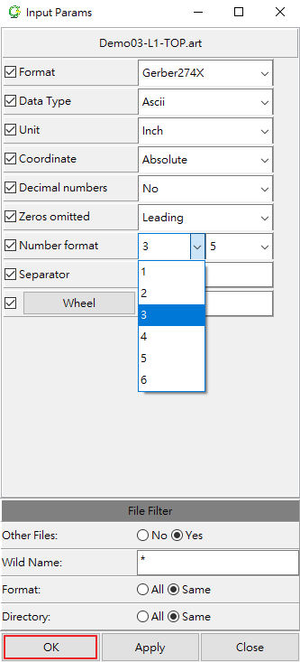
2-2-2 重新 Translate Gerber274X
- 參數更改完成後請再次點選 "Translate"。
- 重新 Translate 後可以再點選 "Editor" 以再次檢閱圖形。
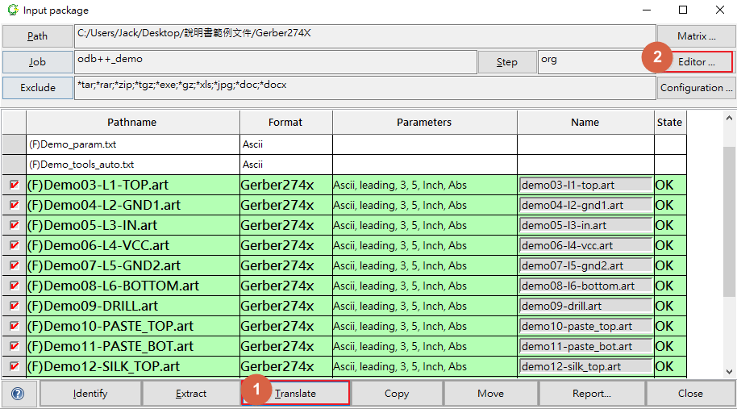
2-3 讀取 Gerber274D 一般程序
- 本章節將利用實際範例來說明讀取 Gerber274D 的一般程序。
2-3-1 創建 Entity
- Entity name：輸入 Entity 名稱(通常為料號)。說明以命名 274D 為例。
- Database：選擇 Entity 存放的位置。說明以預設值 Campro 資料夾為例。
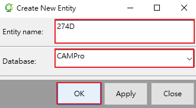
- 以上設定完後請點選 "OK"，跳出的確認通知也點選 "OK"。
- 完成後 Entity 會出現在 camPro 主畫面上。
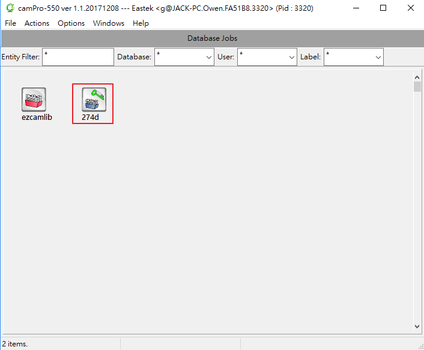
讀取 Gerber274D 有兩種方式：
2-3-2 一般讀取
- 先點選您要讀取 Gerber274D 的 Entity，進入 Input package 畫面後點選 "Input"。
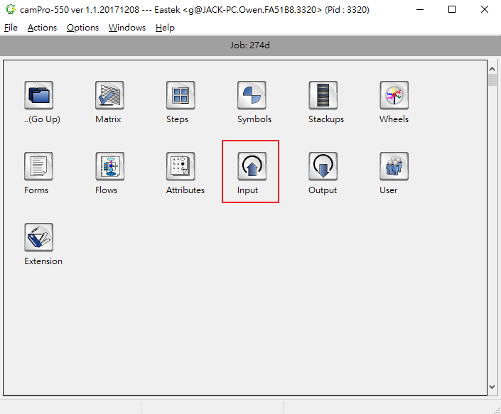
- 點選 "Path"，然後選擇您要讀取的 Gerber274D 檔案，之後點擊 "Open"
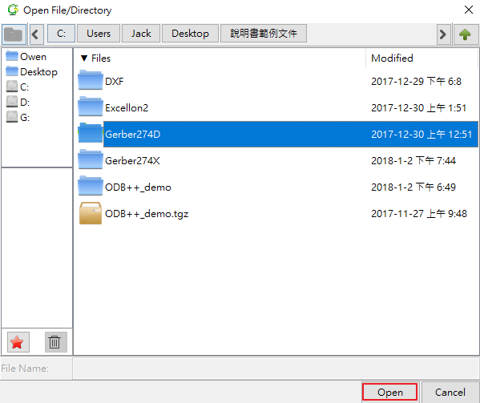
2-3-3 拖曳讀取
- 直接將 Gerber274D 資料夾直接拖曳到 camPro 視窗內。
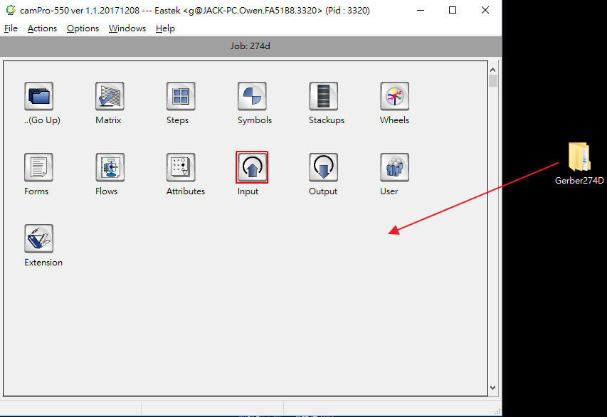
2-3-4 分析與處理 Gerber274D
- 點擊 "Identify"，camPro 會開始分析檔案類型。
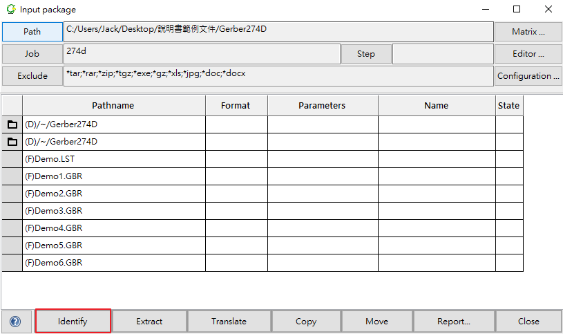
- 分析完成檔案類型會顯示在 Input package 視窗裡，並呈現可勾選狀態。
- 請 在 Step 欄位為它命名，範例名稱以 "org" 為例。
- 請勾選要讀入的 Gerber 檔案後點選 "Translate"。
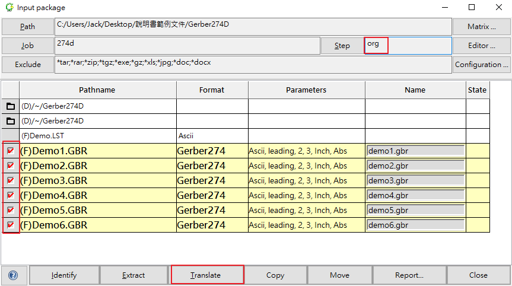
- Gerber 檔案經過 Translate 後 State 欄會顯示讀取後的結果。
- 如果 State 欄顯示 OK 並呈現綠底畫面，即表示該 Gerber274D 已經正常讀取。
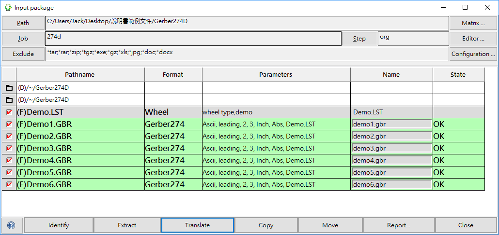
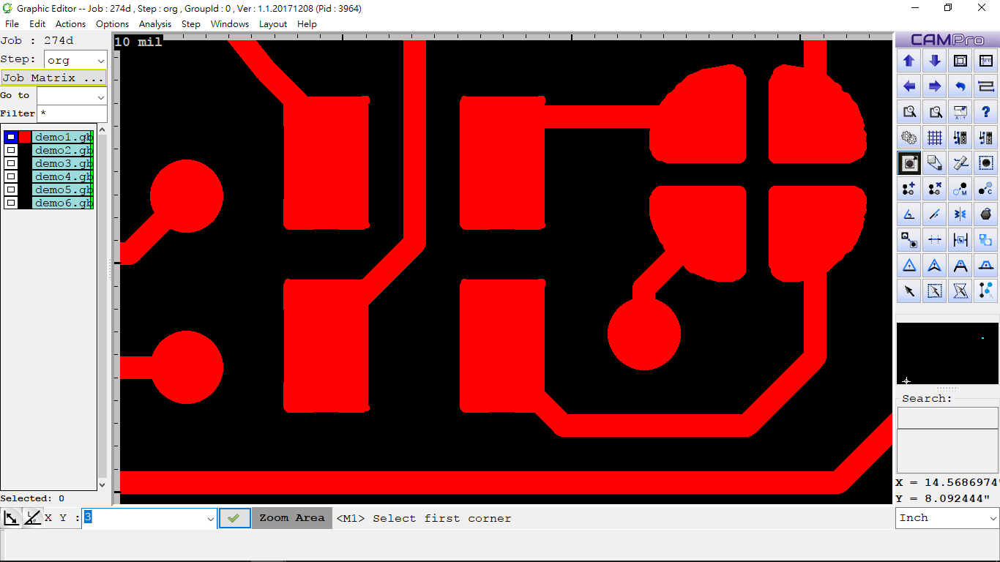
2-4 讀取 Gerber274D 時發生異常時如何處理
- Gerber274D 檔案經過 Translate 後 State 欄會顯示讀取後結果，如果 State 欄出現 Check File，即代表該 Gerber274D 可能沒有被正常讀取，本章節將以實際範例教學來引導您如何修正它。
2-4-1 找出與 Gerber274D 對應的 Ascii 檔案
- 可以點右鍵將 Ascii 檔案打開選 "View Ascii"，來判斷是不是與 Gerber274D 對應的 Ascii 檔案(通常檔案內說明會有 Dcode,Type 等關鍵字)。
- 本說明以 Demo.LST 為例。
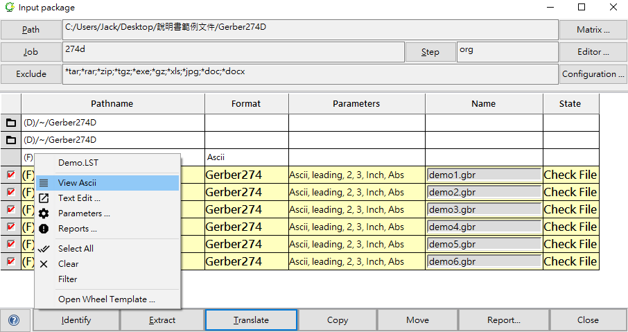
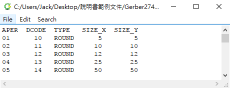
2-4-2 開啟 Wheel Template Editor Form
- 針對要修正的 Ascii 檔案點右鍵，點選 "Open Wheel Template"。
- 本說明以 Demo.LST 為例。
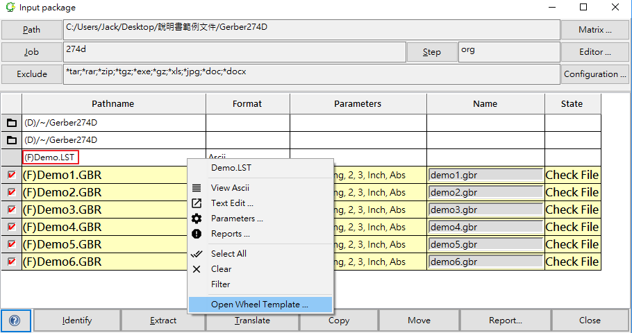
2-4-3 修改 Wheel Template Editor Form
- 請參考以下小章節以了解需要在 Wheel Template Editor Form 內設定的項目。
2-4-3-1 修改參數
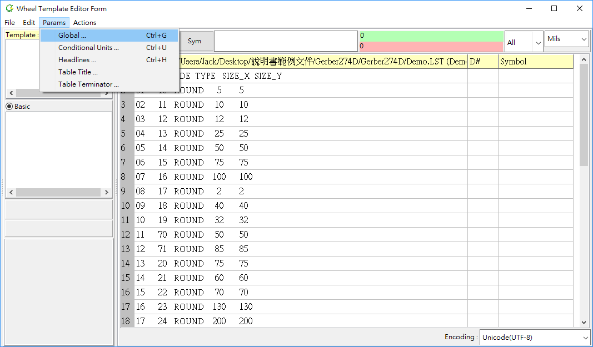
- Wheel type：因為此檔案為 Gerber274D 檔案，所以選擇 Gerber。
- Unit：依據您實際作業的 Size 做判斷，說明以選擇 Mil 為例。
- 點選 "OK"。
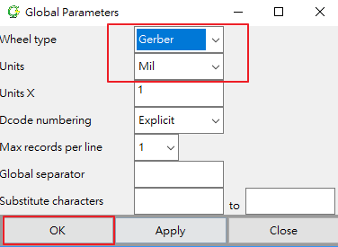
2-4-3-2 設定形狀
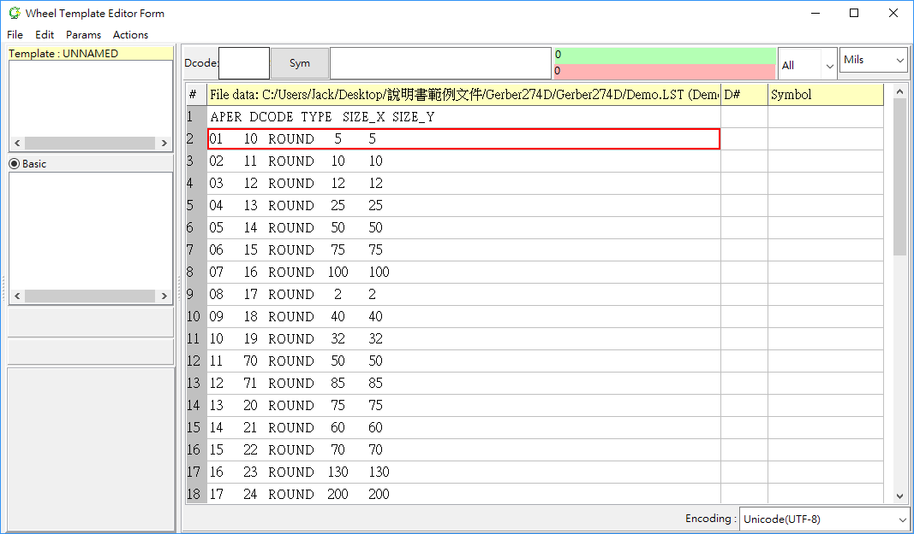
- 點開 "Edit" 選 "Add Record"，會跳出 Popup 視窗。
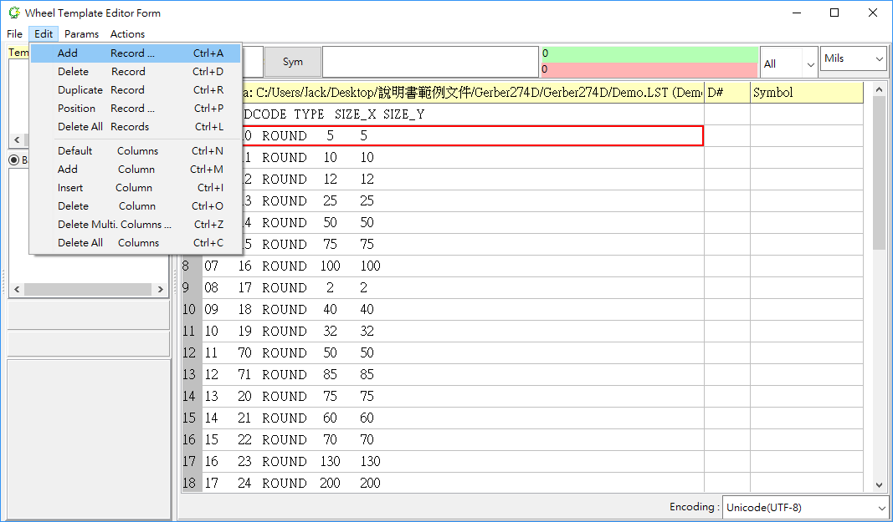
- 因為列表上是 ROUND，所以在 Popup 視窗選擇 "ROUND"，點選 "OK"。
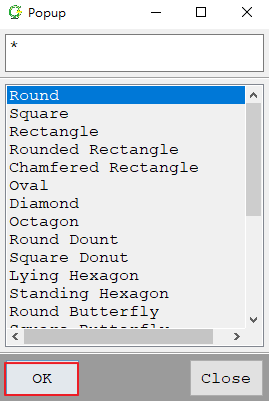
2-4-3-3 設定 Dcode
- 與左邊 Basic 欄框比對後找到與選取紅框內的 Dcode 相同的號碼。
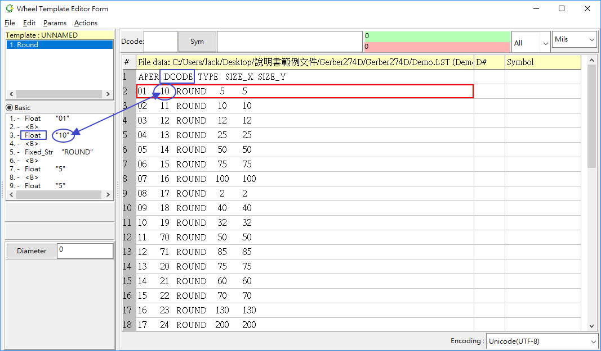
- 將與紅框內和相同 Dcode 號碼的 Float 改為 "Dcode"。
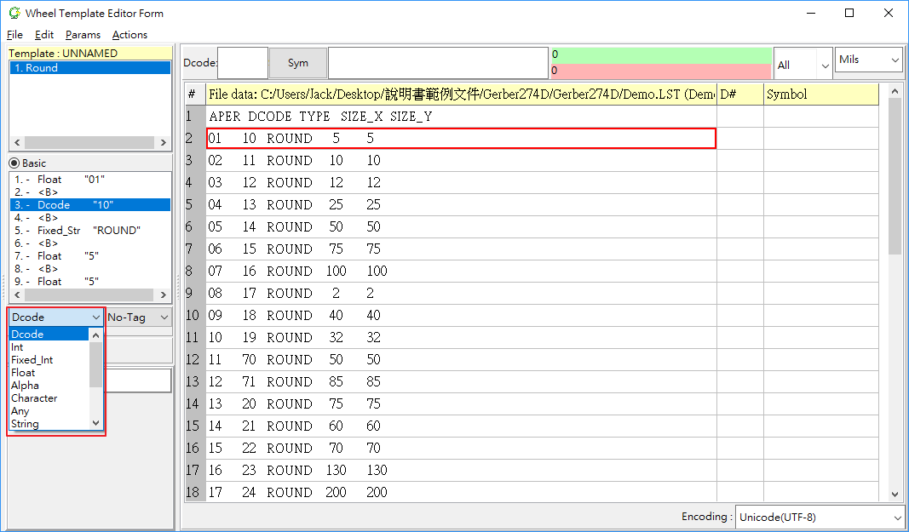
2-4-3-4 設定 Size
- 與左邊 Basic 欄框比對後找到與紅框內的 Size_X 和 Size_Y 相同的數值，然後點選 "Diameter" 以帶入該數值。(由於範例是圓形，所以只需要改一邊 Size 即可)
2-4-3-5 Translate Wheel
- 將參數、形狀、Dcode、Size 都設置完成後，點開 "Actions" 然後點選 "Translate Wheel"。
- 成功轉換的欄位的會呈現綠底狀態，且 camPro 會找到與它相似條件的項目自動帶入。
延續範例
- 因為是不同格式所以剩餘的項目未轉換成功，所以需要重複以上步驟再次設定形狀、設定 Dcode、Size，最後再 Translate Wheel。
設定形狀
- 點選尚未轉換成功的第一個項目，本說明如下圖為 APER 18 欄位。
- 點開 "Edit" 選 "Add Record"，會跳出 Popup 視窗。
- 因為列表上是 "Square"，所以在 Popup 視窗選擇 "Square"，點選 "OK"。
設定 Dcode 與 Size
Translate Wheel
- 將參數、形狀、Dcode、Size 都設置完成後點開 "Actions"，然後點選 "Translate Wheel"。
- 成功轉換的欄位的會呈現綠底黑字，camPro 會找到與它相似的條件自動帶入。
2-4-4 圖形不明時如何處理
- 跳出的 Popup 視窗，選擇 "Round"，然後點選 "OK"。
- 與左邊 Basic 欄框比對後找到與紅框內的 Dcode 相同的號碼。
- 將與紅框內和相同 Dcode 號碼的 Float 改為 "Dcode"。(如果預設值就正確就可以不需要修改)
- 設定 Size：與左邊 Basic 欄框比對後找到與紅框內的 Size_X 和 Size_Y 相同的數值，然後點選 "Diameter"，系統即會帶入此預設值。
- 將形狀、Dcode、Size 等都設置完成後，點開 Actions 然後點選 "Translate Wheel"，該項目呈現綠底狀態即表示已順利帶入。

2-4-5 沒有圖形時如何處理
-
點選指定項目 (說明以紅框選取項目顯示 ---- 為範例)。
-
點開 "Edit" 選 "Add Record"。
-
跳出的 Popup 視窗，選擇 "Round"，然後點選 "OK"。
- 與左邊 Basic 欄框比對後找到與紅框內的 Dcode 相同的號碼。
- 將與紅框內和相同 Dcode 號碼的 Float 改為 "Dcode"。(如果預設值就正確就可以不需要修改)
- 設定 Size：與左邊 Basic 欄框比對後找到與選取紅框內的 Size_X 和 Size_Y 相同的數值，然後點選 "Diameter"，系統即會帶入此預設值。
- 將形狀、Dcode、Size 等都設置完成後都設置完成後，點開 "Actions" 然後點選 "Translate Wheel"，該項目呈現綠底狀態即表示已順利帶入。
2-4-6 X 或 Y 軸的 Size 未提供時如何處理
- 與左邊 Basic 欄框比對後找到與紅框內的 Dcode 相同的號碼。
- 將與紅框內和相同 Dcode 號碼的 Float 改為 "Dcode"。(如果預設值就正確就可以不需要修改)
- 設定 Size：與左邊 Basic 欄框比對後找到與紅框內的 Size_X 和 Size_Y 相同的數值，然後點選 "Diameter"，系統即會帶入此預設值。
- 以上都設置完成後，點開 "Actions" 然後點選 "Translate Wheel"，該項目呈現綠底狀態即表示已順利帶入。
2-4-7 儲存設定完成的 Wheel Template
- 確認所有項目都已經設定形狀、Dcode、Size 後且皆為綠底狀態後，即可準備儲存 Wheel Template 檔。
- 點開 "File" 後點選 "Save" (或按快捷鍵 Ctrl+S )。
- 命名 Wheel Template，範例名稱以 "Demo" 為例。
2-4-8 讀取設定完成的 Wheel Template
▼ 回到 Input package 畫面
2-4-9 重新 Translate Gerber274D
- 勾選需要的 Gerber274D 項目。
- 先點選 "Identify"，後點選 "Translate" 以重新讀入修正 Wheel Template 後的 Gerber274D。
- 跳出的 Warning 視窗會詢問您是否覆蓋選取 Layers 之前的紀錄，這時請點選 "OK"。
- 剛才選取的 Gerber274D 檔經過執行 Translate 後會出現綠底狀態，State 欄位會顯示 OK。
- 最後在點選 "Editor" 進入編輯畫面檢查圖形是否正確讀入。
3-1 讀取 Excellon2 一般程序
- 有關如何讀取 Excellon2 的一般程序請參閱以下實際操作說明。
3-1-1 創建 Entity
- Entity name：輸入 Entity 名稱(通常為料號)。
- Database：選取 Entity 存放的位置。
- 設定完後請點選 "OK"。
- 完成後 Entity 會出現在 camPro 主畫面上。
- 先點選您要匯入 Excellon2 的 Entity，進入 Input package 畫面後點選 "Input"。
讀取 Excellon2 有兩種方式：
3-1-2 一般讀取
- 點選 "Path"，然後點選您要讀取的 Excellon2 檔案，之後點擊 "Open"。
3-1-3 拖曳讀取
- 將 Excellon2 資料夾直接拖曳到 camPro 視窗內。
3-1-4 分析與處理 Excellon2
3-2 讀取 Excellon2 時發生異常時如何處理
- 當 Translate 選取的 Excellon2 項目之後 State 欄位顯示 Check File 時，有可能是有部分資料未被正常讀取，本章節將以實際操作來教導您解決方案。
3-2-1 分割鑽孔 Ascii 文件
- 勾選您要修改的 Excellon2，然後點選 "Extract" 以分割文件。
3-2-2 開啟 Wheel Template Editor Form
- 分割文件後畫面會多出現一個 Ascii 格式的項目，請針對它按右鍵，點選 "Open Wheel Template"。
3-2-3 修改參數
- 打開 Wheel Template Editor Form 之後，點開 "Params"，點選 "Global"。
- 選擇 Wheel Type：Tools。
- 選擇 Unit：Mil。(依據來源尺寸自行判斷單位，說明以 Mil 為例)
- 完成後點選 "OK"。
3-2-4 設定形狀
- 點開 "Edit" 選 "Add Record"。
- 由於是鑽孔，所以選擇 "Hole"，點選 "OK"。
3-2-5 設定 Dcode
- 左邊 Basic 欄必須與右邊欄位數值一致，因此必須與紅框內項目比對相同的 Dcode 數並帶入正確的格式。
- 經比對後可得知，左邊 Basic 欄的 Float 1 即是右方 Dcode 1。
- 點開 Float 改成 Dcode。
3-2-6 設定尺寸
- 左右比對 Size 數值，找到左邊 Basic 欄和右邊 Size 相同的數字，本範例為 8.000000。
- 點選數值左右一致的 Float 欄，然後點擊 "Diameter"，系統即會帶入此數值。
3-2-7 Translate Wheel
- 點開 "Actions"，選 "Translate Wheel"。
- 執行 Translate Wheel 後系統會自動帶入同為 "PLATED" 的項目。
3-2-8 實作範例延續
- 由於是鑽孔，所以選擇 "Hole"，點選 "OK"。
- 比對後找到相同的 Size，點選 "Diameter" 以帶入預設值。
- 設定完形狀、Dcode、Size 後點開 "Actions"，然後點選 "Translate Wheel"。
3-2-9 儲存設定完成的 Wheel Template
3-2-10 讀取設定完成的 Wheel Template
▼ 回到 Input Package 畫面。
- 選擇要 Input 的 Excellon2 檔按右鍵，點選 "Parameter"。
- 點選 "Wheel"，於 Popup 視窗裡選擇剛剛修改的 Wheel 檔案，此範例即 excellon2-01.drl，點選 "OK"。
-
File filter 提供快速讀取並帶入其他類似檔案的功能。
- 請於 Other File 選取 "Yes"。
- Format 選取 "Same"。
- Directory 選取 "Same"。
- 都設定完後請點選 "OK"。
3-2-11 重新 Translate Excellon2
- 勾選需要的 Excellon2 項目。
- 先點選 "Identify"，後點選 "Translate" 以重新讀入修正 Wheel Template 後的 Excellon2。
- 跳出的 Warning 視窗會詢問您是否覆蓋選取 Layers 之前的紀錄，這時請選取 "OK"。
- 剛才選取的 Excellon2 檔，Translate 執行後會出現綠底狀態，State 欄位會顯示 OK。
- 最後請點選 "Editor" 進入編輯畫面檢查鑽孔圖形是否正確讀入。

4-1 讀取 DXF 一般程序
- 本章節會以實際範例來說明讀取 DXF 的一般程序。
4-1-1 創建 Entity
- Entity name：輸入 Entity 名稱(通常為料號)。
- Database：選取 Entity 存放的位置。
- 以上設定完後請點選 "OK"，跳出的確認通知也點選 "OK"。
- 完成後 Entity 會出現在 camPro 主畫面上。
- 先點選您要讀取 DXF 的 Entity，進入 Input package 畫面後點選 "Input"。
讀取 DXF 有兩種方式：
4-1-2 一般讀取
- 點選 "Path"，然後您要讀取的 DXF 資料夾，之後點選 "Open"。
4-1-3 拖曳讀取
- 將 DXF 資料夾直接拖曳到 camPro 視窗內。
4-1-4 分析與處理 DXF
- 點擊 "Identify"，camPro 就會開始分析檔案類型。
- DXF 檔案經過 Translate 後 State 欄顯示 OK 即表示您的 DXF 已經正常讀取。
- 接下來請點選 "Editor"，以檢閱您的 DXF 圖形顯示是否符合預期。
4-2 讀取 DXF 時發生異常時如何處理
- 如果您發現您所讀取的 DXF 圖形顯示不符合預期，本章節提供您一些解決方案。
4-2-1 如何修正 DXF 參數
- 如果遇到 DXF 比例不正確時，請先勾選需要修正的 DXF，然後再點右鍵，點選 "Parameters" 以修改參數。
4-2-2 重新 Translate DXF
- 更改完成後即可依據修正後的參數再次點選 "Translate"。
5-1 匯出 Gerber274X
- 此章節會以實際範例示範如何匯出 Gerber274X。
5-1-1 如何開啟 Output Package 視窗
開啟 Output 視窗有兩種方式：
a. 點選您要 Output 的 Job 名稱，然後點選 "Output"。(本說明以 gerber274x 為例)
b. 點開 "Windows"，點選 "Output"。
5-1-2 選擇需要 Output 的 Job
- 點選 "Job"，選擇您要的匯出的 Job (可複選)，然後點選 "OK"。
5-1-3 選擇需要 Output 的 Step
- 點選 "Job"，選擇您要的匯出的 Step (可複選)，然後點選 "OK"。
5-1-4 設定 Output 格式
- 設定 Format Group：camPro 提供 Gerber Base, Drawing, Drill/Rout, GDSII, CAM System, Netlist 讓您選擇，本說明以選擇 Gerber Base 為例，Format 選 Gerber274x 為例。
5-1-5 選擇需要 Output 的 Layer
- 您可以任意勾選您需要的 Layer 來匯出，本說明以勾選全部 Layer 為例。
- 如果您只需要部分 Layer，可以針對任一個項目點右鍵，然後點選 "Layer Filter" 來做快速篩選您需要的 Layer。
5-1-6 設定參數
- 點選 "More" 後會出現 Output Parameter Popup。
-
Break S & R：可選擇是否將排版打散。
-
Break Symbols：可選擇是否將 Symbol 打散。
-
Break Arcs：可選擇是否將 Arc 打散。
-
Scale Mode：漲縮模式設定。
-
Surfaces Mode：對 Surface 的描述方式。
-
Contour： 以多邊形方式描述外框，需搭配 Clean Hole overlap 設定多邊形的重疊距離使用。
-
Fill： 以最小線寬來填滿 Surface，需搭配 Minimal brush 設定填滿多邊形的最小線寬。
-
Unit：單位設定。
-
Coordinates：座標設定。
- Absolute:絕對座標 ; Incremental：相對座標。
-
Zeroes omitted：是否補零設定 。
- None：不補零。
- Leading：前補零。
- Trailing：後補零。
※第一個欄位的數值越大則圖形比例越大,反之則越小。
※修改圖形比例時原則上兩者數值相加要相同。
- 以上參數設定請依據您的需求做修改，完成後點擊 "Close"，回到主畫面。
5-1-7 儲存參數設定
- 回到 Output Package，點選 "Save" 以儲存剛剛的在參數設定所做的修改。
- 儲存之後點選 "Load" 即會擷取上一次 Save 的參數設定。
5-1-8 選擇 Output 路徑
- 點選 "Dir path"，選擇要存放的路徑然後按 "Open"。(說明以存放路徑 C:/CAMPro/1.1/bin/ 為例)
5-1-9 命名 Gerber274X 檔案
- File Prefix：主檔名，說明以 Gerber274x-01 為例。
- File Suffix：附檔名後綴名，說明以 .a 為例。
5-1-10 選擇定位點
5-1-11 Output Gerber274X 完成
- 將以上參數設置完成後，點選 "Apply" 即可至已設定的 Dir path 路徑找到您 Output 的 Gerber274X 檔案!
5-2 匯出 Excellon2
- 此章節會以實際範例示範如何匯出 Excellon2。
5-2-1 如何開啟 Output Package 視窗
開啟 Output 視窗有兩種方式：
a. 點選您要 Output 的 Job 名稱，然後點選 "Output"。(本說明以 Excellon2 為例)
b. 點開 "Windows"，點選 "Output"。
5-2-2 選擇要 Output 的 Job
- 點選 "Job"，選擇您要的匯出的 Job (可複選)，然後點選 "OK"。
5-2-3 選擇要 Output 的 Step
- 選擇要 Output 的 Step (可複選)，然後點選 "OK"。
5-2-4 設定 Output 格式
- 設定 Format Group：camPro 提供 Gerber Base, Drawing, Drill/Rout, GDSII, CAM System, Netlist 讓您選擇，由於本章節是說明如何匯出鑽孔檔，所以本說明以選擇 Drill/Rout 為例，Format 選擇 Excellon2 為例。
5-2-5 選擇要 Output 的 Layer
- 您可以任意勾選您需要的 Layer 來匯出，本說明以勾選 excellon2-01 為例。
- 如果您只需要部分 Layer，可以針對任一個項目點右鍵，然後點選 "Layer Filter"。
5-2-6 設定參數
- 點選 More 後會出現 Output Parameter Popup。
-
Break S & R：可選擇是否將排版打散。
-
Break Symbols：可選擇是否將 Symbol 打散。
-
Break Arcs：可選擇是否將 Arc 打散。
-
Scale Mode：漲縮模式設定。
-
Surfaces Mode：對 Surface 的描述方式。
-
Contour：以多邊形方式描述外框,需搭配 Clean Hole overlap 設定多邊形的重疊距離使用
-
Fill：以最小線寬來填滿 Surface,需搭配 Minimal brush 設定填滿多邊形的最小線寬。
-
Unit：單位設定。
-
Coordinates：座標設定。
- Absolute:絕對座標 ; Incremental：相對座標。
-
Zeroes omitted：是否補零設定 。
- None：不補零。
- Leading：前補零。
- Trailing：後補零。
※第一個欄位的數值越大則圖形比例越大,反之則越小。
※修改圖形比例時原則上兩者數值相加要相同。
- 以上參數設定請依據您的需求做修改，完成後點擊 "Close"，回到主畫面。
5-2-7 儲存參數設定
- 回到 Output Package，點選 "Save" 以儲存剛剛的在參數設定所做的修改。
- 儲存之後點選 Load 即會擷取上一次 Save 的參數設定。
5-2-8 選擇 Output 路徑
- 點選 "Dir path"，選擇要存放的路徑然後按 "Open"。(說明以存放路徑 C:/CAMPro/1.1/bin/ 為例)
5-2-9 命名 Excellon2 檔案
- File Prefix：主檔名，說明以 Excellon2-01 為例。
- File Suffix：附檔名後綴名，說明以 .a 為例。
5-2-10 選擇定位點
5-2-11 Output Excellon2 完成
- 將以上參數設置完成後，點選 "Apply" 即可至已設定的 Dir path 路徑找到您 Output 的 Excellon2 檔案!
5-3 匯出 DXF
5-3-1 如何開啟 Output Package 視窗
開啟 Output 視窗有兩種方式：
a. 點選您要 Output 的 Job 名稱，然後點選 "Output"。(本說明以名稱為 DXF-demo 為例)
b. 點開 "Windows"，點選 "Output"。
5-3-2 選擇需要 Output 的 Job
- 點選 "Job"，選擇您要的匯出的 Job，然後點選 "OK"。
5-3-3 選擇需要 Output 的 Step
- 點選 "Step"，選擇您要的匯出的 "Step"，然後點選 "OK"。
5-3-4 設定 Output 格式
- 設定 Format Group：campro 提供 Gerber Base, Drawing, Drill/Rout, GDSII, CAM System, Netlist 讓您選擇。
- 要匯出 DXF 時，Format Group 必須選 Drawing，Format 欄即會帶出 DXF。
5-3-5 選擇需要 Output 的 Layer
- 您可以任意勾選您需要的 Layer 來匯出，本說明以勾選 dxf-demo 為例。
- 如果您只需要部分 Layer，可以針對任一個項目點右鍵，然後點選 "Layer Filter"。
5-3-6 設定參數
- 點選 More 後會出現 Output Parameter Popup。
-
Break S & R：可選擇是否將排版打散。
-
Break Symbols：可選擇是否將 Symbol 打散。
-
Break Arcs：可選擇是否將 Arc 打散。
-
Scale Mode：漲縮模式設定。
-
Surfaces Mode：對 Surface 的描述方式。
-
Contour：以多邊形方式描述外框,需搭配 Clean Hole overlap 設定多邊形的重疊距離使用。
-
Fill：以最小線寬來填滿 Surface,需搭配 Minimal brush 設定填滿多邊形的最小線寬。
-
Unit：單位設定。
-
Pad as Circle：PAD 的型態是否要改以輪廓線方式描述。
-
Draft Mode：是否要以 0 線寬來描述輪廓線。
-
Output Files：輸出檔案的型態。
- Multiple：多層 。
- Single：單一層別。
-
Contour to HATCH：是否要以 Surface 去填滿實心部分。
-
Rectangle Pads to outline：Rectangle Pads 是否要以輪廓線方式描述。
-
以上參數設定請依據您的需求做修改，完成後點擊 "Close"，回到主畫面。
5-3-7 儲存參數設定
- 回到 Output Package，點選 "Save" 以儲存剛剛的在參數設定所做的修改。
- 儲存以後點選 "Load" 即會擷取上一次 Save 的參數設定。
5-3-8 選擇 Output 路徑
- 點選 "Dir path"，選擇要存放的路徑然後按 "Open"。(說明以存放路徑 C:/CAMPro/1.1/bin/ 為例)
5-3-9 命名 DXF 檔案
- File Prefix：主檔名，說明以 dxf01 為例
- File Suffix：附檔名後綴名，說明以 .a 為例
5-3-10 選擇定位點
5-3-11 Output DXF完成
- 將以上參數設置完成後，點選 "Apply" 即可至剛才設定的 Dir path 路徑找到您 Output 的 DXF 檔案!